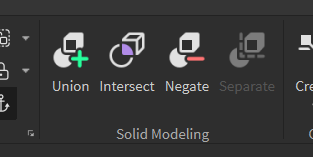
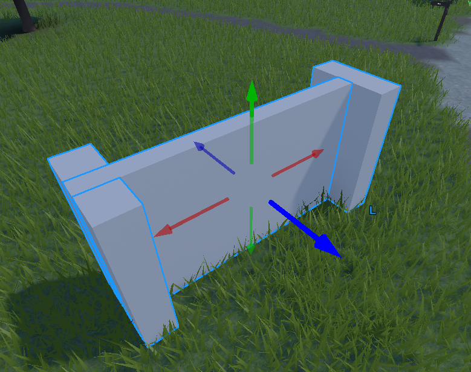
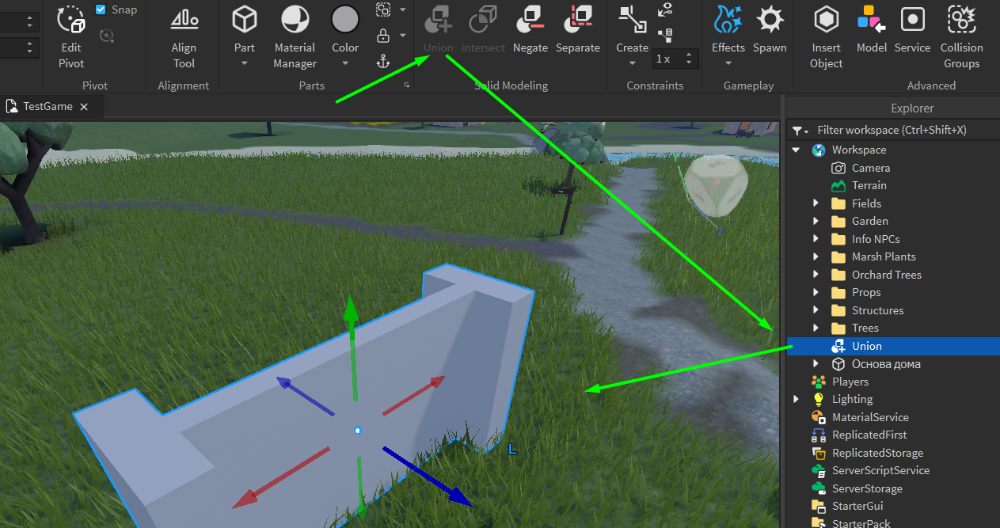
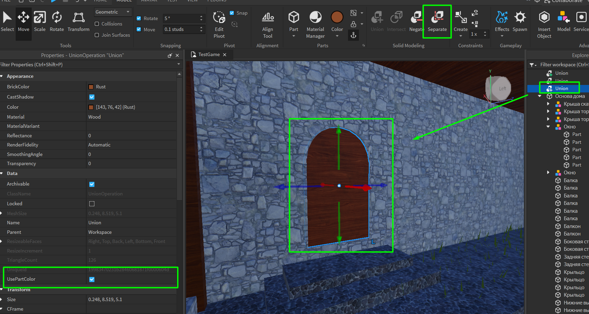

Создание игр в Roblox Studio
Твердотельное моделирование
Это занятие посвящено изучению нового вида моделирования в Roblox Studio, а именно - твердотельного моделирования или Solid Modeling. Оно используется для того, чтобы создавать более сложные геометрические объекты путём вычитания и сложения базовых примитивов.
Кнопки для твердотельного моделирования находятся на вкладке Model справа от блока создания и настройки параметров новых деталей. Всё твердотельное моделирование основывается на 3 операциях: Union, Negate и Separate.
Что такое твердотельное моделирование?
Твердотельное моделирование - создание объектов, которое позволяет сделать более сложные геометрические формы, которые изначально не доступны в базовых примитивах Roblox Studio. Они получаются за счет объединения нескольких форм в более сложную геометрическую фигуру при помощи сложения либо вычитания двух примитивов.
Кнопка Union. Операция объединения
Кнопка Union(объединение) позволяет объединить примитивы в один сложный объект, при этом в отличие от простого пересечения двух объектов, все, что находится на пересечении форм будет удалено, то есть весь объект станет одной цельной неразрывной фигурой.
Обратите внимание что в окне Explorer теперь не три отдельных объекта, один новый названием Union - это общее название для всех объектов, полученных при помощи твердотельного моделирования.
Кнопка Negate. Операция вычитания
Следующая операция, которую необходимо изучить - операция Negate. Она позволяет вычесть форму одного объекта из другого и таким образом получить идеально совпадающие по размеру и форме отверстия в изначальном объекте
Именно благодаря этой операции будут создаваться окна и двери.
Создадим ещё одну деталь и разместим ее таким образом, чтобы она насквозь пересекала деталь из предыдущего примера. После этого нажмем на неё и выберем операцию Negate. Увидим, что деталь стала прозрачной и окрасилась в красный цвет - это значит, что теперь эта форма будет вычитаться при объединении с другими объектами. Выделим детали и нажмем на команду Union. После объединения этих деталей в изначальной форме образуется вырез по форме 2 объекта.
Важно: для создания сквозного отверстия необходимо, чтобы деталь для выреза насквозь проходила объект с обеих сторон. Если деталь для выреза будет видно только с одной стороны, получится врез по форме и глубине этой детали.
Практика объединения и вычитания: окна второго этажа, дверной проход
Теперь можно перейти к практике и сделать отверстие под окна в стене второго этажа.
Для этого создадим одну деталь и разместим её в том месте, где вы планируете сделать вырез.
Чтобы после выреза было удобнее создавать стекло, сдублируем деталь в финальном ее положении и переместим дубликат по оси Z вперёд или назад. Применим команду Negate к детали для выреза и объединим её со стеной второго этажа. В полученное отверстие переместим сдублированную деталь, сделаем ее тоньше и применим материал Glass с прозрачностью около 0.3-0.7. Также смоделируем раму для окна.
Следующее отверстие, которое необходимо вырезать в доме - дверной проход. Вместо того, чтобы вырезать стандартную прямоугольную дверь, вырежем более сложную форму с аркой. Создадим базовую деталь, которая будет основной частью прохода. После этого сдублируем её и поднимем по верхней оси так, чтобы её центр был выровнен по верхней грани оригинальной детали. В окне Properties найдем свойство Shape и изменим его значение с Block на Cylinder.
Объединим полученную форму при помощи Union. Продублируем. 1 дубликат используем для вырезки дверного проема в стене. 2 для самой двери.
После того как дверной проём готов, необходимо сделать саму дверь. Она должна быть тоньше, чем изначальная деталь для выреза, но при попытке изменить размер двери по глубине, она будет меняться сразу же по всем трем осям - это свойство всех деталей, полученных при помощи операций твердотельного моделирования.
Кнопка Separate. Операция разделения
Для того чтобы изменить их размер, придется отменить операцию твердотельного моделирования при помощи третьей кнопки панели Solid Modeling - Separate. Она позволяет отменить любые операции, совершенные со сложным объектом.
Применим операцию Separate к двери, изменим размеры верхней и нижней детали и объединим детали заново. Поменяем материал и цвет детали.
По умолчанию цвет объектов, полученных при помощи твердотельного моделирования, не изменяется. Чтобы это исправить, необходимо включить свойство UsePartColors в параметрах объекта.
Твердотельное моделирование в Roblox Studio применяется не только для того, чтобы делать базовые формы и вырезы - с его помощью можно создать намного более сложные модели, например, оружие, одежду, машины и т.Д.
Практика твердотельного моделирования
После закрепления базовых навыков работы, перейдем к более сложной практической части. Используя полученные навыки, необходимо создать сложных объекты: крепостную стену, ворота, башню.
Стена
- Создаем основу
- Добавляем платформу сверху, чтобы можно было передвигаться по ней
- Добавляем блоки по периметру платформы
- Подготавливаем поперечные блоки для вырезки проёмов в боковых блоках
- Вырезаем поперечные блоки из боковых
- Декорируем (цвет, материал, доп. декорации)
Ворота
- Сдублируем стену и увеличим её
- Создадим большой блок (по форме как дверь у дома) и вырежем его из стены
- Добавим контрфорсы (они делаются из двух прямоугольных деталей при помощи Nigate)
- Декорируем (цвет, материал, доп. декорации)
Контрфорс в архитектуре — это вертикальный выступ или ребро, усиливающее стену.

Башня
- Создадим цилиндр, сдублируем его
- Дубликат переместим на верх, уменьшим его и вырежем из главноого цилиндра
- Добавим прямоугольную деталь сверху башни, продублируем её, чтобы получилась форма шестеренки ⚙️
- Объединим детали шестеренки, после чего применим Union и вырежем её из основной части
- Декорируем (цвет, материал, доп. декорации)
Домашкаа 😁
- Завершить модели, которые не успели на занятии (стена, ворота или башню)
- Если всё успели, то необходимо самостоятельно выбрать какой-либо сложный объект (стиль замка, средневековья)
- Смоделировать выбранную модель, используя навыки, полученные на занятии